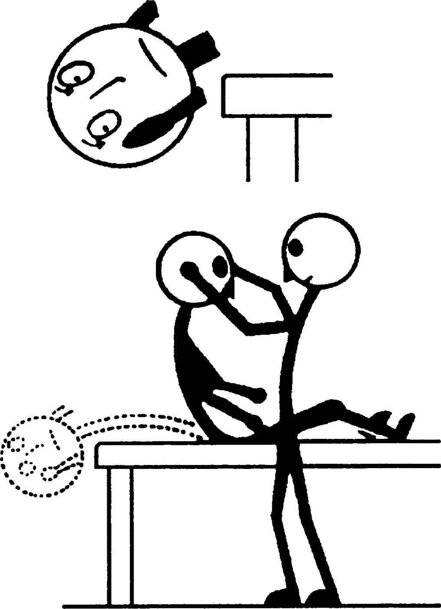
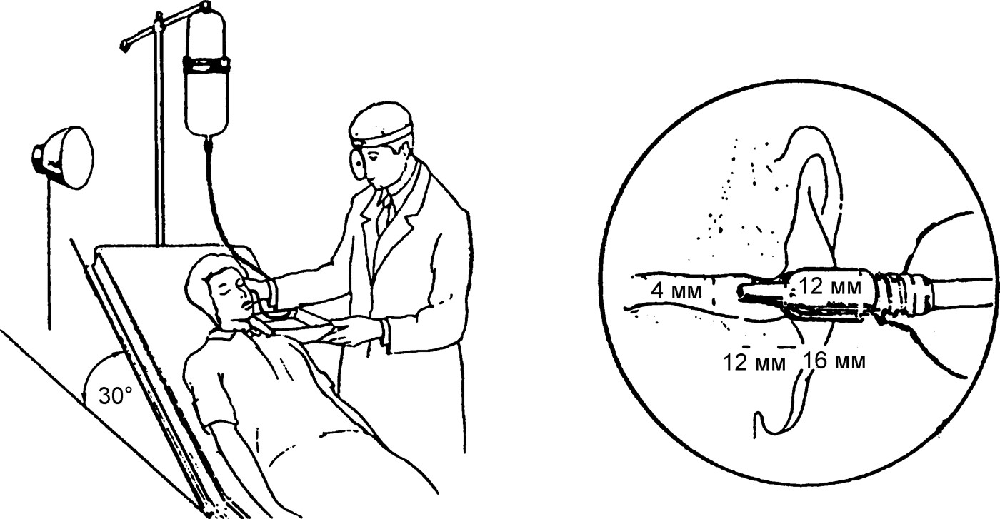

Методы исследования вестибулярного анализатора
Общие положения
Эффективность обслуживания больного, проявляющего признаки вестибулярной дисфункции, во многом зависит от правильной организации процесса его обследования. Задачей врача является оценка состояния пациента и выполнение первых ориентировочных приёмов, направленных на установление предварительного диагноза. Всех больных с остро наступившим вестибулярным пароксизмом эвакуируют лёжа в дежурный ЛОР- или неврологический стационар.
У больных, находящихся в удовлетворительном состоянии, но предъявляющих жалобы, связанные с вестибулярной дисфункцией, нередко при попытке проведения даже самых щадящих вестибулометрических проб может возникнуть вестибулярный пароксизм, сопровождающийся холодным потом, бледностью кожных покровов, тошнотой, рвотой, спонтанным нистагмом, резким усилением головокружения. Поэтому специальные вестибулометрические пробы применяют лишь в условиях стационара, с большой осторожностью, по показаниям, после тщательного изучения анамнеза и оценки общего состояния больного. В амбулаторных условиях обследование таких больных ограничивается анамнезом и регистрацией спонтанно проявляющихся вестибулярных симптомов — спонтанного нистагма, пробами на координацию движений (указательные пробы, пробы Ромберга1 и ходьба).
Плановое обследование больного с нарушением вестибулярной функции включает изучение жалоб, анамнеза заболевания, проведение клинических, лабораторных, функциональных, рентгенологических, вестибулометрических и аудиометрических исследований. Традиционный ЛОР-осмотр дополняют «отоневрологическими» пробами, с помощью которых оценивают функции тройничного, лицевого, языкоглоточного, обонятельного, вкусового и глазодвигательных нервов; такие больные подлежат обязательному осмотру невролога и окулиста. Как правило, в первые дни заболевания активные пробы не проводят, ограничиваясь регистрацией жалоб и спонтанных проявлений болезни. Окончательное заключение выносят лишь тогда, когда все альтернативные варианты диагноза будут сняты: нередко за признаками «функциональной» лабиринтопатии скрываются серьёзные органические поражения как самого ушного лабиринта, так и соответствующих структур головного мозга.
Анамнез
Тщательно собранный анамнез в большинстве случаев позволяет выбрать правильное направление в обследовании больного и высказать наиболее вероятную гипотезу о характере вестибулярной дисфункции. При сборе анамнеза обращают внимание на следующие вопросы:
- Давность заболевания, периодичность и продолжительность приступов, их динамика: внезапность начала, ремиттирующее течение, постепенное или абортивное прекращение клинических проявлений.
- Характеристика признаков (головокружение, атаксия, тошнота), последовательность их возникновения, сочетание с симптомами нарушения функций других органов и систем; характер головокружения (системное, несистемное), причины его возникновения (спонтанное или при резких движениях головы).
- Наличие слуховых расстройств, их совпадение с вестибулярными нарушениями по времени и стороне поражения; наличие ушного шума, гиперакузии, ухудшения разборчивости речи.
Во всех случаях вестибулярной дисфункции проводят тональную пороговую аудиометрию и, по показаниям, другие аудиометрические исследования. Для систематизации анамнеза целесообразно пользоваться специальными картами-опросниками, в которых отмечают характер и направление головокружения, вегетативные реакции, нарушение равновесия, усиление головокружения в темноте, при закрытых глазах, изменении положения головы, его связь с нарушением слуха, перенесённые операции на ухе и черепе, травмы черепа.
Выбор специального вестибулометрического обследования проводят на основании данных анамнеза и предварительного заключения после обязательной консультации невролога. Как правило, обследование начинают с наиболее щадящих вестибулометрических проб. Перечень клинических методов вестибулярного обследования:
- Исследование спонтанных патологических вестибулярных реакций: субъективные ощущения, пробы на координацию движений, спонтанный нистагм, нистагм положения, прессорный нистагм, функции статического и динамического равновесия, непрямая отолитометрия.
- Методы объективной вестибулометрии: электронистагмография и видеонистагмография.
- Экспериментальные пробы: вращательные, калорические, оптокинетические.
Спонтанный нистагм
Под спонтанным вестибулярным нистагмом подразумевают непроизвольные циклические сокращения глазодвигательных мышц, обусловленные заболеванием или поражением вестибулярного аппарата или его центров, приводящие к ритмичным движениям глазных яблок. Эти движения состоят из двух компонентов — быстрого и медленного. Особенностью вестибулярного нистагма любого генеза является его усиление при взгляде в сторону быстрого компонента. Направление любого глазного нистагма определяют по быстрому компоненту, как наиболее заметному движению.
Методика исследования заключается в следующем: обследуемый фиксирует взором палец обследующего, располагаемый сначала по средней линии, затем вправо на 30°, вновь посередине, затем влево на 30°, затем вверх и вниз. Обращают внимание на оба глаза, так как при определённой патологии вестибулярных центров может наблюдаться монокулярный нистагм. Для лучшего наблюдения нистагма и исключения феномена фиксационного подавления применяют очки с линзами +20 дптр. При визуальной оценке отмечают направление нистагма (по быстрому компоненту), его степень (интенсивность), амплитуду, ритмичность, частоту. По направлению различают горизонтальный, горизонтально-ротаторный, диагональный, ротаторный, вертикальный нистагм.
По интенсивности спонтанный вестибулярный нистагм делят на три степени:
- I степень возникает только при отведении глаз в сторону быстрого компонента, а при взгляде прямо или в сторону медленного компонента исчезает; такой нистагм оценивают как самый слабый.
- II степень проявляется при взгляде прямо и в сторону быстрого компонента и исчезает при повороте глаз в сторону медленного компонента; такой нистагм оценивают как средней силы.
- III степень наблюдается при любом положении глазных яблок, усиливается при взгляде в сторону быстрого компонента, может ослабевать при взгляде в сторону медленного компонента (закон Alexander2).
По амплитуде спонтанный нистагм делят на мелко-, средне- и крупноразмашистый: на нистагмограммах мелкоразмашистому нистагму соответствует амплитуда колебаний глазных яблок 0,5–2,5 мм (1,2–6°), среднеразмашистому — 3–6 мм (7–14°), крупноразмашистому — более 7 мм (более 15°). При периферических (лабиринтных) поражениях частота, амплитуда и угловая скорость медленного компонента спонтанного нистагма увеличиваются пропорционально остроте патологического процесса. Крупноразмашистый нистагм II и III степени, иногда множественного направления, чаще всего является признаком поражения вестибулярных центров и стволовой ретикулярной формации; нарушение временного соотношения компонентов нистагма в пользу преобладания медленного компонента бывает только при центральных поражениях.
От истинного вестибулярного спонтанного нистагма следует отличать другие формы самопроизвольных движений глаз экстралабиринтного генеза:
- Физиологический нистагм, возникающий при крайних отведениях глаз вследствие напряжения экстраокулярных мышц: выражен слабо, одинаково интенсивен вправо и влево, быстро истощается.
- Установочный (интенционный) нистагм, обусловленный нарушением аккомодации: проявляется при крайних отведениях глаз и длится не более 2–3 с.
- Маятникообразный (ундулирующий) нистагм, связанный с аномалиями развития органа зрения: отличается высокой частотой (8–12 колеб./с) и небольшой амплитудой.
- Центральный нистагм, обусловленный надъядерными поражениями: множественный, монокулярный, пульсирующий (ретракторный), конвергирующий, качательный.
Позиционный нистагм
Позиционный нистагм — разновидность спонтанного нистагма, которая возникает при различных положениях головы относительно туловища или направления силы земного притяжения. В основе его патогенеза лежат либо сосудистые заболевания в области шейного отдела позвоночника и вертебрально-базилярного бассейна, либо процессы, обусловливающие компрессию нистагмогенных центров в области ствола головного мозга. Позиционный нистагм, возникающий при поворотах головы со скручиванием шейного отдела позвоночника, получил название шейного позиционного нистагма. Нистагм, обусловленный компрессией со стороны объёмного образования в задней черепной ямке, назван компрессионным; в отличие от шейного он не претерпевает обратного развития, а прогрессирует вместе с заболеванием.
Гравипозиционный нистагм регистрируют в четырёх позициях больного — на спине, на правом и левом боку и на животе; голову при укладывании поддерживают руками, чтобы не возникло движений в шейном отделе позвоночника. В каждой позиции больной должен находиться не менее 3 мин. Появление не истощающегося позиционного нистагма или усиление имеющегося спонтанного нистагма может служить указанием на наличие в задней черепной ямке объёмного процесса, чаще всего экстрамедуллярной локализации.
Гравипозиционный нистагм может наблюдаться и при изменениях в ушном лабиринте, например при купулолитиазе; такой нистагм определяют как нистагм лёгкой пароксизмальной формы (Dix M., Hallpike C., 1952). Методика исследования: больной сидит на кушетке, взор его фиксирован на лбу врача. Врач охватывает голову больного обеими руками, поворачивает её умеренным усилием вправо и укладывает больного на спину. Через несколько секунд у больного появляется головокружение и нистагм, направленный в сторону нижележащего уха (нистагм укладывания); могут возникнуть поташнивание, бледность, холодный пот. Все указанные явления в течение нескольких секунд усиливаются, а затем быстро исчезают. При возвращении в исходное положение обычно вновь появляется слабое головокружение и нистагм, направленные в противоположную сторону. Через несколько минут пробу повторяют с поворотом головы влево.

Сам по себе поворот головы без укладывания может вызвать шейный позиционный нистагм. Поэтому перед укладыванием проводят пробу с поворотом головы без укладывания с задержкой в такой позиции в течение 30 с; если реакций не возникает, проводят пробу с укладыванием.
Прессорный нистагм (фистульный симптом)
Прессорный нистагм, или нистагм от давления, возникает в тех случаях, когда имеется нарушение целости кости ушного лабиринта, вследствие которого перилимфатическое пространство сообщается с барабанной полостью. Этот дефект, называемый фистулой лабиринта, может быть прикрыт грануляционной тканью, холестеатомой или рубцовой тканью, которые могут препятствовать отчётливому проявлению фистульного симптома. Чаще всего фистула лабиринта возникает на медиальной стенке барабанной полости в области дуги горизонтального полукружного канала или мыса в результате длительно текущего гнойного процесса в среднем ухе при кариесе или холестеатоме. Диагностирование фистулы лабиринта — важный этап в определении показаний к хирургическому вмешательству на среднем ухе.
Обычно фистула лабиринта сочетается с дефектом барабанной перепонки, поэтому фистульный симптом легко вызывается повышением давления в наружном слуховом проходе с помощью ушной оливы-обтюратора и баллона Политцера; решающую роль играет не сила давления на грушу, а герметичность закрытия оливой наружного слухового прохода. Вместо баллона можно воспользоваться приёмом вдавления козелка в наружный слуховой проход или пневматической ушной воронкой Зигле. Если фистула прикрыта грануляционной тканью или холестеатомой, проводят осторожное зондирование, желательно под микроскопом, подозрительных мест на медиальной стенке барабанной полости: при прикосновении зондом к фистуле больной испытывает головокружение, появляются нистагм, отклонение туловища и головы.
Иногда прессорный нистагм возникает при целой барабанной перепонке, например при дегисценции полукружного канала, аномалиях развития среднего и внутреннего уха, врождённом сифилисе, повышенной подвижности основания стремени. Прессорный нистагм кратковременен и длится только в момент повышения или понижения давления в наружном слуховом проходе — не более 3–4 с. Иногда при наличии фистулы прессорный нистагм не выявляется, однако если при этом возникает головокружение, фистульный симптом следует считать положительным. Заслуживает внимания так называемый полный фистульный симптом, описанный М. Ф. Цытовичем3 в 1912 г.: при длительном (15–20 с) повышении давления в наружном слуховом проходе прессорный нистагм сначала направлен в сторону обследуемого уха, затем меняет своё направление на противоположное.
Координация движений верхних конечностей
Спонтанный нистагм может сопровождаться гармоническим нарушением координации движений верхних конечностей. Нарушение координации при попытке целевого указания проявляется промахиванием обеими руками в какую-либо сторону; при наличии спонтанного нистагма это промахивание всегда совпадает с направлением медленного компонента и противоположно направлению иллюзии самовращения.
Проба вытянутых рук: больной сидит с закрытыми глазами и вытянутыми прямо перед собой руками, указательные пальцы распрямлены; врач фиксирует концы своих пальцев в непосредственной близости от пальцев больного и наблюдает за медленным перемещением рук. При нормально функционирующем вестибулярном аппарате обследуемый в течение длительного времени (более 3 мин) удерживает вытянутые руки в первоначальном положении. При нарушении вестибулярной функции обе руки постепенно отклоняются в сторону, противоположную направлению головокружения, а при наличии спонтанного нистагма — в сторону медленного компонента. При поражении мозжечка наблюдается отклонение только одной руки на стороне поражения.
Указательная проба — пальце-пальцевая и пальценосовая: больной сначала при открытых, затем при закрытых глазах старается попасть своим пальцем в палец обследующего или в кончик своего носа; опыт проводят правой и левой рукой по 4–5 раз. При нарушении вестибулярной функции больной промахивается обеими руками в сторону медленного компонента спонтанного нистагма. Дисгармоничное отклонение рук, выраженное интенционное дрожание руки при приближении пальца к цели или ошибочное выполнение пробы только одной рукой свидетельствует о поражении мозжечка на стороне ошибки.
Тест с письмом (Fucuda T., 1959; Базаров В. Г., 1988): обследуемому предлагают написать ряд чисел сначала сверху вниз, затем слева направо — с открытыми, затем с закрытыми глазами. Отклонение при вертикальном письме более чем на 10° свидетельствует о поражении sacculus, отклонение более чем на 5° при горизонтальном письме — о поражении utriculus. При вестибулярных нарушениях фигуры оказываются систематически деформированными, но легко узнаваемыми; при мозжечковых нарушениях рисунки искажены до неузнаваемости и каждый раз по-другому.
Статическое равновесие
В комплекс систем, регулирующих функцию равновесия при прямостоянии, входят вестибулярный, проприоцептивный, зрительный и другие анализаторы при координирующей роли мозжечка. Утрата вестибулярной функции удовлетворительно компенсируется органом зрения и глубокой чувствительностью, однако без неё невозможно достижение высокого качества пространственной координации движений. В острых случаях вестибулярной дисфункции, когда центральная компенсация ещё не реализована, какие-либо пробы на статическое и тем более динамическое равновесие противопоказаны; в период субкомпенсации их проводят лишь при соответствующей страховке пациента.
Проба Ромберга (1846) является наиболее распространённой и доступной. Простая позиция Ромберга заключается в том, что больной стоит, сомкнув стопы и закрыв глаза; пробу можно усложнить, предложив вытянуть руки вперёд, расположить стопы друг за другом в одну линию, запрокинуть голову или наклонить её к плечу. При поражении вестибулярного аппарата отклонение в позе Ромберга происходит всегда только в одном направлении: при наличии спонтанного нистагма или головокружения — в сторону медленного компонента или в сторону, противоположную ощущению собственного движения. При мозжечковой атаксии отклонение тела происходит назад; больной в отсутствие зрительного контроля падения не ощущает и его не компенсирует.
К количественным методам исследования статического равновесия относятся пробы, при которых в позе Ромберга регистрируют экскурсии головы (кефалография) или общего центра тяжести тела (стабилография), а также пробы с неустойчивой площадью опоры — метод гониометрии, предложенный С. Ф. Штейном4 в 1898 г. Методика состоит в измерении угла наклоняющейся площадки, при котором наступает нарушение равновесия обследуемого, стоящего на этой площадке с закрытыми глазами.
Динамическое равновесие
Под функцией динамического равновесия понимают способность сохранять адекватное положение тела при активном или пассивном перемещении в пространстве. Для её исследования применяют различные пробы с ходьбой, сущность которых заключается в визуальной оценке качества равновесия и правильности выполнения ходьбы по заданному маршруту.
Проба с ходьбой: обследуемому предлагают пройти обычным шагом по средней линии дорожки длиной 4–5 м сначала с открытыми глазами, затем с закрытыми. Здоровые лица на финише отклоняются от средней линии не более 10–15 см. При недостаточности вестибулярной функции больной отклоняется в сторону менее активного лабиринта на значительно бо́льшую величину — от 20 см до 1 м и более. При мозжечковой атаксии отклонения носят хаотичный характер, нередко с заступами или даже падением назад.
Проба с ходьбой «вперёд-назад»: больной с закрытыми глазами непрерывно совершает по 5–10 шагов вперёд и такое же количество шагов спиной назад, всего 5 циклов. При разной активности лабиринтов больной при ходьбе вперёд всегда отклоняется в одну сторону, а при ходьбе назад — в другую, отчего весь путь напоминает пятиконечную звезду. Проба с фланговой ходьбой применяется для различения вестибулярной и мозжечковой атаксии: при заболевании мозжечка отклонение от осевой линии наблюдается лишь при ходьбе в сторону очага поражения.
Проба с ходьбой на месте (Fucuda T., 1959): больной с закрытыми глазами шагает на месте, высоко поднимая колени, делая 50 или 100 шагов. Здоровый человек за весь период пробы может переместиться на 50–100 см от исходной позиции с поворотом на угол 10–30°. Больной с нарушением вестибулярной функции смещается от исходной точки более чем на 1 м и совершает поворот на угол 45–180°.
Непрямая отолитометрия
Метод непрямой отолитометрии основан на безусловном тоническом преддверно-глазодвигательном рефлексе противовращения глаз, отражающем, по мнению ряда авторов, функциональное состояние отолитового аппарата. Феномен рефлекса заключается в синхронном повороте глазных яблок вокруг зрительных осей в направлении, противоположном наклону головы, совершаемому во фронтальной плоскости. Методика состоит в измерении угла противовращения глаз при положении обследуемого лёжа сначала на правом, затем на левом боку; в качестве тест-критерия используется последовательный зрительный образ, формируемый засветкой сетчатки до укладывания больного на бок.
Среднее значение угла противовращения глаз для здорового человека составляет 18,6±5,5° (Пащинин А. Н., 1989); при гипофункции отолитового аппарата рефлекс противовращения глаз уменьшается на 3° и более. Наклон головы к поражённому лабиринту приводит к меньшему противовращению глаз, чем такой же наклон в сторону интактного лабиринта. Методика перспективна при вибрационной и шумовой болезни, а также при односторонних поражениях ушного лабиринта (болезнь Меньера, апоплексия лабиринта, воспалительные, токсические и травматические поражения).
Регистрация вызванного нистагма: электро- и видеонистагмография
Регистрация вызванного нистагма проводится визуальным и графическим способами. Недостатком визуальной регистрации является то, что она проводится при открытых глазах обследуемого, что при наличии феномена зрительного подавления нистагма существенно его затормаживает; поэтому целесообразно использовать специальные очки (+20 диоптрий). В настоящее время для регистрации движения глаз используют методы электронистагмографии (ЭНГ) и видеонистагмографии (ВНГ).
ЭНГ основана на регистрации изменений распространяющегося в периокулярных тканях корнеоретинального биоэлектрического потенциала, возникающих при движениях глазных яблок; разрешающая способность метода составляет около 3°. Электроды размещают так, чтобы прямые линии, соединяющие центры пар электродов, проходили через зрачки глаз при их прямом положении; наиболее часто применяют битемпоральные отведения. При этих отведениях возможна регистрация всех форм движений глазных яблок, за исключением ротаторных и пульсирующих. Количественная обработка нистагмограмм предусматривает калибровку движений глаз до и после обследования.
При анализе результатов ЭНГ вычисляют частоту, амплитуду, угловую скорость быстрого и медленного компонентов, общую длительность нистагменной реакции. Возможны следующие варианты оценки состояния вестибулярного аппарата:
- Норморефлексия — состояние, свойственное здоровым в отиатрическом отношении лицам.
- Гиперрефлексия — повышение числовых значений первичных параметров нистагма.
- Гипорефлексия — снижение числовых значений первичных параметров нистагма.
- Асимметрия — основной признак вестибулярной дисфункции, проявляется превалированием нистагма в какую-либо сторону; в норме средняя разница между продолжительностью нистагма при вращении вправо и влево не превышает 10 с.
- Арефлексия — полное отсутствие вестибулярного нистагма при экспериментальных пробах; односторонняя арефлексия может быть выявлена только с помощью калорической пробы при раздельной стимуляции лабиринтов.
- Диссоциация нистагма — несоответствие показателей калорического и вращательного нистагмов; нередко наблюдается при ограниченных лабиринтитах, лабиринтозах, фистулах лабиринта.
Видеонистагмография относится к современным методам регистрации и компьютерного анализа движений глаз при различных тестовых программах исследования опто-окуломоторной и вестибуло-окуломоторной функций. Точность измерения составляет не более 1/4°, что практически на порядок выше, чем при ЭНГ.
Вращательные пробы
Общим принципом вращательных проб является воспроизведение ускоряющегося или замедляющегося вращения, во время которого энергия внешней силы через силу инерции передаётся купуло-эндолимфатической системе. Различают нистагм, возникающий в начале вращения при действии ускорения (вращательный), и нистагм, возникающий в конце вращения при действии замедления (поствращательный). Вращательный нистагм всегда направлен быстрым компонентом в сторону ускоряющегося вращения; поствращательный — в сторону, противоположную замедляющемуся вращению.
Проба Барани5 (1906): обследуемого с закрытыми глазами вращают со скоростью 0,5 об./с, сделав 10 оборотов, после чего кресло резко останавливают и визуально оценивают поствращательный нистагм при отклонении взора в сторону, противоположную направлению вращения, учитывая и длительность нистагменной реакции. В настоящее время эта проба утратила практическое значение. Все вращательные пробы предусматривают вращение в обе стороны с перерывом не менее 5 мин. При периферических поражениях вестибулярного аппарата выявление межлабиринтной асимметрии возможно лишь в острых случаях — в течение первых 2–3 недель от начала заболевания, после чего наступает центральная компенсация.
Калорические пробы
Преимуществом калорической пробы перед вращательной является возможность одностороннего раздражения ушного лабиринта. Эта проба относится к щадящим вестибулометрическим методикам. Основным стимулирующим фактором калорической пробы являются конвекционные токи, возникающие в жидкостях лабиринта и вовлекающие в своё движение купол.
Первым, кто применил калорическую стимуляцию ушного лабиринта в клинической практике, был Р. Барани (1906): больному с запрокинутой назад на 60° головой вливали в наружный слуховой проход 100 мл холодной воды (23–25 °С) в течение 10 с. Нистагм своим быстрым компонентом при орошении холодной водой всегда направлен в сторону, противоположную раздражаемому уху. В. И. Воячек для повышения эффективности стимуляции предложил увеличить время орошения до 20 с и понизить температуру воды до 20 °С, сохранив её объём в 100 мл. Запрокидывание головы при калоризации нежелательно, поскольку является элементом позиции де Клейна, провоцирующей шейный позиционный нистагм.
Калорическая проба, проводимая водой, нагретой до температуры 37 °С, калорического нистагма не вызывает. Обычно для проведения холодовой и тепловой проб применяют воду соответственно 30 и 44 °С. Калорические пробы делят на монауральные и бинауральные, монотермальные, битермальные и политермальные. При монауральной пробе её проводят сначала на одном ухе, затем через 30 мин на другом; битермальный тест предусматривает последовательное применение для каждого уха сначала холодной, затем тёплой воды. Критериями оценки функционального состояния вестибулярного аппарата являются калорический нистагм и длительность возникающего головокружения.
Битермальная монауральная проба Фицжеральда — Холлпайка (Fitzgerald G., Hallpike C. S., 1942) позволяет дифференцировать периферические поражения вестибулярного анализатора от центральных. Обследуемого укладывают лицом вверх так, чтобы ось головы составила 30° к горизонту; температура «холодной» воды — 30 °С, «тёплой» — 44 °С, время орошения — 40 с, расход жидкости — 400 мл. Орошение каждого уха проводят сначала холодной водой, затем тёплой с интервалом 5 мин. По Фицжеральду и Холлпайку, в норме длительность калорического нистагма в ответ на холодовой раздражитель составляет 120 с, тепловой — 100 с; поскольку индивидуальные различия значительны (30–40 с и более), критерием нормы следует считать не абсолютную продолжительность калорического нистагма, а интерауральную разницу. В настоящее время применяются отокалориметры с автоматическим дозированием стимула — нагретого или охлаждённого воздуха.

Простая калорическая проба (Uemura T. et al., 1977) отличается чрезвычайной щадимостью и применяется у лиц с выраженной вестибулярной реактивностью: обследуемый лежит на спине, голову наклоняют к груди на 30° и поворачивают исследуемым ухом вверх; шприцем через воронку вводят воду температуры 20 °С до полного заполнения слухового прохода, через 20 с голову поворачивают лицом вверх и в очках 20 дптр наблюдают нистагм, отмечая время его окончания.
Примечания
1Romberg M. H. (1795–1873) — немецкий невролог; позиция Ромберга (positio Romberg) — признак локомоторной атаксии. Проба описана в 1846 г. (по: Бабияк и соавт., т. 2, с. 444, 476)
2Alexander G. (1873–1932) — крупный австрийский оториноларинголог, известен трудами по нормальной и сравнительной анатомии уха, физиологии и патологии ушного лабиринта. (по: Бабияк и соавт., т. 2, с. 434, 477)
3Цытович М. Ф. (1869–1936) — крупный русский оториноларинголог, ученик Н. П. Симановского, основатель саратовской оториноларингологической школы. В 1912 г. описал полный фистульный симптом. (по: Бабияк и соавт., т. 2, с. 440, 476)
4Штейн фон С. Ф. (1855–1921) — крупный русский оториноларинголог, основоположник отечественной экспериментальной вестибулологии и один из основателей российской оториноларингологии; автор диссертации «Учение о функции отдельных частей ушного лабиринта» (1892) и монографии «Головокружение. Autokinesis externa и interna» (1910). В 1898 г. предложил метод гониометрии. (по: Бабияк и соавт., т. 2, с. 445, 477)
5Bárány R. (1876–1936) — крупный австрийский учёный (венгерского происхождения) в области лабиринтологии и отохирургии; удостоен Нобелевской премии за труды в области вестибулологии. В 1906 г. предложил вращательную и калорическую пробы. (по: Бабияк и соавт., т. 2, с. 461, 471, 477)
Источники
- Бабияк В. И., Накатис Я. А., Говорун М. И. Оториноларингология. Руководство. Т. 2. — СПб.: Питер, 2009. — Гл. 26 «Методы исследования вестибулярного анализатора»: с. 428–456, 460–461, 469–473 (рис. 26.3, 26.24).
- Бабияк В. И., Накатис Я. А., Говорун М. И. Оториноларингология. Руководство. Т. 2. — СПб.: Питер, 2009. — Примечания к главе 26 (сведения об учёных): с. 476–477.
Раздел «Учебник» — справочная теория, не клинические рекомендации. Тактика ведения пациента — по разборам КР.